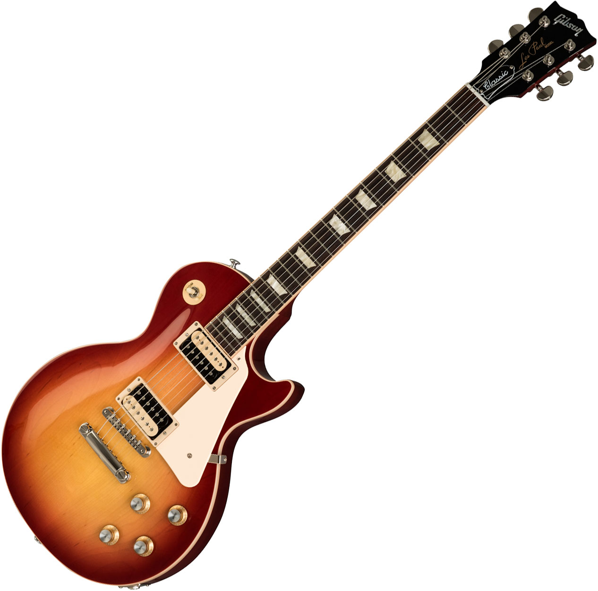
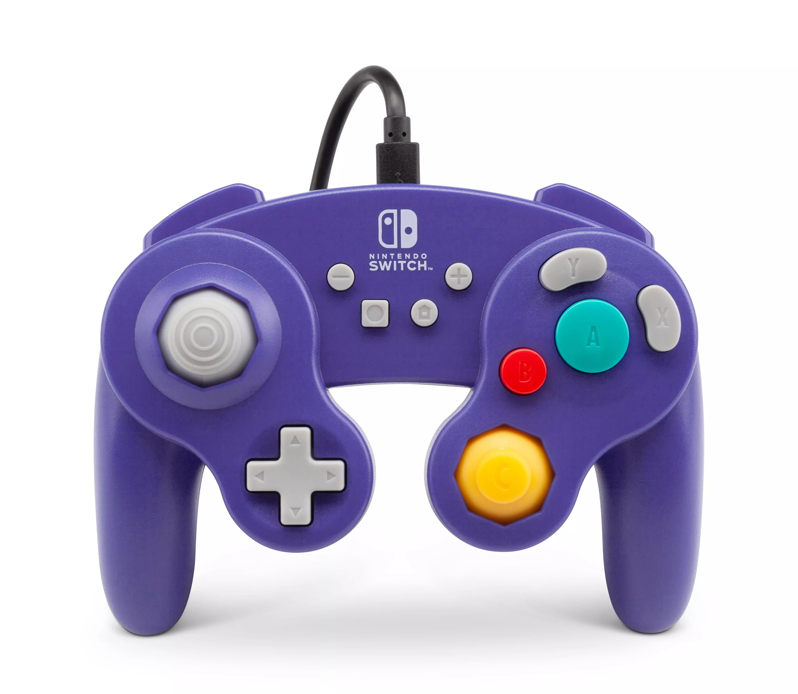

Learning Guitar

Picking up Guitar
I always loved Music, so it was natural that when I was 13 I asked my parents for a guitar.
It is also natural that they would believe it to be a waste, when it is common for a young
teen to pick up and drop hobbies at the drop of a hat. Nonetheless, I convinced them, but ultimately
they were right. I only ended up playing for a few weeks before dropping it.
However, when I was 19 just before going off to college, the inspiration hit me.
I picked guitar up again, and this time I actually played it. Since then I have played
fairly regularly and now, after 4 more years I am proficient. Still not the greatest but a major improvement from
my first attempt at learning.
I am extremely glad my parents bought me that guitar a decade ago. Now it is one
of my greatest passions in life and a great creative outlet. I believe all kids should try to
learn an instument, no matter what it is. It is a great way to develop the brain and
stimulate the senses. But do not be disapointed if your kid drops it right away.
After all, they might just pick it up again many years later.
Gaming

My first Video Game: Banjo Kazooie
When I was growing up my family had a Nintendo 64, I was still a toddler at the time
but was always facinated by it. I would watch my parents and older sister play games on it
and it captivated me. Eventually, when I was about 4 years old I played it for the first time.
I remember that my dad and sister were still on the first world (they were not very good at video games)
and I picked up the controller. At first I had no clue what I was doing, but I just continued playing.
Not long after, I would go on to beat the first world along with my sister. Together we got to the 6th world
after about a year.
This solidified video games as a staple in my life, whenever I was having a bad day
or was just bored or lonely, I would play. Today I still play, quite a bit in fact.
This love of Video Games also spurred in me another love, the creation of video games.
Which is now what I am building my career towards. Banjo Kazooie still holds a special place in my heart.
All in all, video games are great!
My Favorite Games
| Game |
Year |
Platform |
| Banjo Kazooie |
1998 |
Nintendo 64 |
| Knights of the Old Republic |
2003 |
PC/Xbox |
| The Witcher 3 |
2015 |
PC/Xbox One/ PS4 |